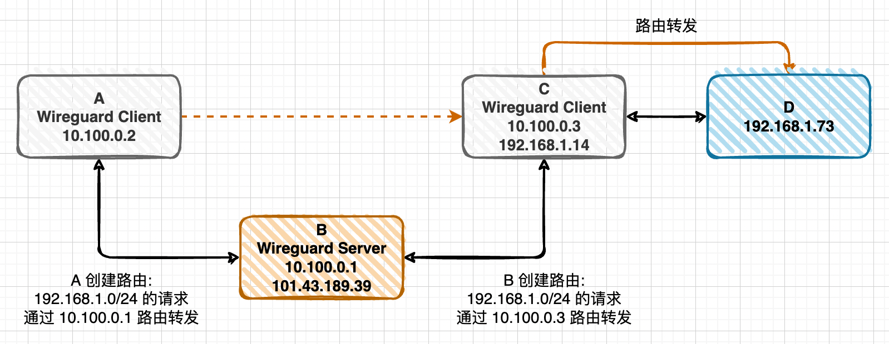

在 OSX Monterey 使用 VPN 中介绍了 Monterey 使用 L2TP-IpSpec VPN 的问题，并且使用 Windows Server 2016 进行中转处理的方案，虽然勉强能用，但是不够方便，本文中介绍了几种其他方案:
- 方案一、Zerotier
- 方案二、Wireguard
- 方案三、Wireguard + Zerotier
由于各种原因最终使用了方案三，本地能够直接访问公司内网了，且速度能够接受，比使用 Windows Server 2016 的方案更好，但技术上也复杂不少。当有内网可使用 Wireguard 的机器时再切换为方案二，不考虑方案一是因为跨电信运营商时太慢。
方案一、Zerotier
使用 Zerotier 把 A 和 C 组网 (192.168.191.0/24)，A 访问 C 所在内网机器时 (192.168.1.0/24) 通过 C 进行路由转发:
A 和 C 组网:
注册 Zerotier 账号，访问 https://www.zerotier.com，可以使用 Github 账号直接登录
Linux 安装 Zerotier:
curl -s https://install.zerotier.com | sudo bashLinux 入网 Zerotier:
zerotier-cli join $NETWORK_ID在 Zerotier 网站的 Networks 里面的 Members 下允许入网
A 创建路由，网关为 C:
在 Zerotier 网站的 Networks 里面的 Managed Routes 下配置路由表, 增加如下内容 (设置路由参考 https://www.mrdoc.fun/doc/138/):
1
2Destination (Via)
192.168.1.0/24 192.168.191.151点击 Submit 提交
Zerotier 在非 Via IP (如上图的 192.168.191.151) 的 Zerotier Client 节点上(如上图的 192.168.181.231) 会自动创建路由:
查看路由的命令:
netstart -nr或者route -n:1
2
3
4
5
6
7[root@VM-24-15-centos ~]# netstat -nr
Kernel IP routing table
Destination Gateway Genmask Flags MSS Window irtt Iface
0.0.0.0 10.0.24.1 0.0.0.0 UG 0 0 0 eth0
10.0.24.0 0.0.0.0 255.255.252.0 U 0 0 0 eth0
192.168.1.0 192.168.191.151 255.255.255.0 UG 0 0 0 zt6ovw6gh5
192.168.191.0 0.0.0.0 255.255.255.0 U 0 0 0 zt6ovw6gh5路由分析:
1
2
3
4
5192.168.1.0 192.168.191.151 255.255.255.0 UG 0 0 0 zt6ovw6gh5
此路由说明访问 192.168.1.0 IP 段的机器时:
1. 使用本机网卡 zt6ovw6gh5 (Zerotier 创建的网卡) 发送请求到网关 192.168.191.151
2. 然后网关 192.168.191.151 再进行转发到下一跳 (需要继续看他的路由表)
3. 这样一跳一跳的最终到达目标机器，互联网上的机器互相访问都要进过很多跳才能到达
C 路由转发从 Zerotier 网卡发来的 192.168.1.0/24 的请求:
Linux 内核支持路由转发，但默认是关闭的，需要开启 (参考 Enable IP forwarding):
1
2echo "net.ipv4.ip_forward = 1" >> /etc/sysctl.conf
sysctl -p防火墙设置 (参考 Configure iptables):
1
2
3
4PHY_IFACE=eth0; ZT_IFACE=zt6ovw6gh5
sudo iptables -t nat -A POSTROUTING -o $PHY_IFACE -j MASQUERADE
sudo iptables -A FORWARD -i $PHY_IFACE -o $ZT_IFACE -m state --state RELATED,ESTABLISHED -j ACCEPT
sudo iptables -A FORWARD -i $ZT_IFACE -o $PHY_IFACE -j ACCEPT
到此，可以在 A 上访问 192.168.1.0 IP 段的机器如 C 和 D 了，在 A 上进行 ping:
ping 192.168.1.14ping 192.168.1.73
能 ping 通就说明没有问题。
此方案的优缺点:
- 优点: 简单、免费
- 缺点: 目前遇到的情况是 A 在河北电信，C 在北京联通，A 访问 C 的网络延迟很大，达到了 400+ms，非常慢
方案二、Wireguard
使用 Wireguard 把 A 和 C 组网 (10.100.0.0/24)，A 访问 C 所在内网机器时 (192.168.1.0/24) 通过 C 进行路由转发:
准备固定公网 IP 的机器 B: 可购买云服务器
在 B 上安装 Wireguard:
- Centos7.x 下安装 Wireguard
- Wireguard 的安装不区分 Server 和 Client
- Wireguard 的进程作为 Server 还是 Client，由提供的配置决定
A 和 C 组网:
- A 和 C 上安装 Wireguard:
- Centos7.x 下安装 Wireguard
- Mac 中安装 Wireguard:
brew install wireguard-tools
- A 和 C 作为 Wireguard Client 运行
- A 和 C 的 IP 在配置文件中指定
- 配置中的 AllowedIPs: Wireguard 启动时用来创建路由，可以是多个，以英文逗号分隔，例如 10.100.0.0/24,192.168.1.0/24
- A 和 C 上安装 Wireguard:
详细配置可参考 使用 WireGuard 无缝接入内网，其中需要注意的是 C 的 PostUp 和 PostDown 可能需要修改为 MASQUERADE 的方式:
1
2PostUp = iptables -t nat -A POSTROUTING -s 10.100.0.0/24 -o eth1 -j MASQUERADE
PostDown = iptables -t nat -D POSTROUTING -s 10.100.0.0/24 -o eth1 -j MASQUERADE或者
1
2PostUp = iptables -t nat -A POSTROUTING -o eth1 -j MASQUERADE
PostDown = iptables -t nat -D POSTROUTING -o eth1 -j MASQUERADE如果 C 所在局域网内的机器如 D 想访问 Wireguard 子网内的机器如 A:
C 添加到 Wireguard 子网的 NAT 规则:
1
iptables -t nat -A POSTROUTING -o wg0 -j MASQUERADE
A 添加 C 为 Wireguard 子网的网关:
1
route add -net 192.168.99.0/24 gw 192.168.1.14
此方案优缺点:
- 优点: 简单，速度快，与方案一使用 Zerotier 的方案非常相似
- 缺点: 需要购买固定公网 IP 的云服务器作为 Wireguard Server，并且 Wireguard 对 Linux 的内核版本有要求:
- 查看内核:
uname -r - 已支持: 3.10.0-1160.45.1.el7.x86_64
- 不支持: 3.10.0-957.el7.x86_64
- 即使是 CentOS 7，默认使用的还是 3.10 的内核，可升级内核到 4.0 以后
- 升级 CentOS 内核——Wireguard
- 启动 Wireguard 时报错: RNETLINK answers: Operation not supported，有可能是内核不支持，也可能 most likely the wireguard kernel module is not loaded in your system，可参考 https://www.ivpn.net/knowledgebase/linux/linux-wireguard-rtnetlink-answers-operation-not-supported/
- 查看内核:
Wireguard 常用命令:
- 启动:
wg-quick up wg0 - 停止:
wg-quick down wg0 - 查看节点列表:
wg - 重载配置文件:
wg syncconf wg0 < (wg-quick strip wg0)# 重载配置文件,不影响已有连接 - 生成客户端密:
wg genkey | tee privatekey-client | wg pubkey > publickey-client
方案三、Wireguard + Zerotier
很不幸，我所使用的环境中 C 和其所在子网内的机器都是 CentOS 7，且内核版本是 3.10.0-957.el7.x86_64，不支持 Wireguard，方案一太慢几乎不可用，内核不支持 Wireguard 导致方案二不可行，后来发现，B 和 C 使用 Zerotier 组网时速度还挺快，于是尝试了下 A 和 B 使用 Wireguard 组网，B 和 C 使用 Zerotier 组网，这样 A 访问 C 时网络延迟在 30ms 左右，竟然还不错。
结合方案一和方案二进行组网与路由转发:
B 和 C 使用 Zerotier 组网 (参考方案一)
B 创建路由，网关为 C (参考方案一):
网页上添加后，Zerotier 帮我们自动在 B 上创建 192.168.1.0/24 到 192.168.1.151 的路由
C 路由转发从 Zerotier 网卡发来的 192.168.1.0/24 的请求 (参考方案一)
A 和 B 使用 Wireguard 组网 (参考方案二)
A 创建路由，网关为 B 的 Wireguard Server 的 IP:
手动创建:
1
2Mac
sudo route -n add -net 192.168.1.0 -netmask 255.255.255.0 10.100.0.1自动创建: 如果在 Wireguard client 配置中的 AllowedIPs 中增加了 192.168.1.0/24 的话，则这个路由 Wireguard 会自动帮我们创建，就不需要使用上面的命令手动创建了，例如下面的配置:
1
2
3
4
5
6
7
8
9
10[Interface]
PrivateKey = SJTfDAn9KPIcdU4OwYIAkeoEPtMARISGw3t5UTkpG34=
Address = 10.100.0.2/32
DNS = 8.8.8.8
[Peer]
PublicKey = wvUNhRbrR8zfDcOyeEGunn7iTUkQEmFCAnOqnAJdEQE=
Endpoint = 101.43.189.39:5120
AllowedIPs = 10.100.0.0/24,192.168.1.0/24
PersistentKeepalive = 25What is the difference between Endpoint and AllowedIPs fields in Wireguard config file?
AllowedIPs (
[Peer]config section) is the set of IP addresses the local host should route to the remote peer through the WireGuard tunnel. This setting tells the local host what goes in tunnel.B 路由转发从 Wireguard 网卡 wg0 发来的 192.168.1.0/24 的请求到 B 上 Zerotier 创建的网卡 zt6ovw6gh5 (注意不是 eth0)
1
2
3iptables -t nat -A POSTROUTING -o zt6ovw6gh5 -j MASQUERADE
iptables -A FORWARD -i zt6ovw6gh5 -o wg0 -m state --state RELATED,ESTABLISHED -j ACCEPT
iptables -A FORWARD -i wg0 -o zt6ovw6gh5 -j ACCEPT到此，可以在 A 上访问 192.168.1.0 IP 段的机器如 C 和 D 了，在 A 上进行 ping:
ping 192.168.1.14ping 192.168.1.73
能 ping 通就说明没有问题。
此方案的优缺点:
- 优点: 速度尚可接受
- 缺点: 太复杂
CentOS 使用 L2TP-IpSpec VPN
由于 C 在公司内网，外部只能通过 L2TP-IpSpec 的 VPN 进行访问。在外网操作 C 时，需要在 B 上使用 L2TP-IpSpec VPN 访问 C:
- 使用命令行配置 Linux VPN 客户端
- 直到
至此 VPN 客户端配置已完成，按照下面的步骤进行连接(当你每次尝试连接到 VPN 时，必须重复下面的所有步骤)1
2
3
4
5mkdir -p /var/run/xl2tpd
touch /var/run/xl2tpd/l2tp-control
service strongswan restart
service xl2tpd restart
echo "c myvpn" > /var/run/xl2tpd/l2tp-control1
2
3
4
5
6运行 ifconfig 并且检查输出，现在你应该看到一个新的网络接口 ppp0，分配到了 IP 如 192.168.3.12
ifconfig
查看路由
route -n
netstat -nr - 添加局域网的路由 (不要按照文章里修改默认路由)
1
2
3
4
5添加路由
ip route add 192.168.1.0/24 dev ppp0
删除路由
ip route del 192.168.1.0/241
2测试路由
ping 192.168.1.14
需要注意的是，同一个机器上 192.168.1.0/24 的路由只能创建一个，如果被占用了需要先删除 (上面方案三创建了 192.168.1.0/24 到 192.168.1.151 的路由)，然后再添加上面访问 VPN 的路由，否则添加失败，导致 B 不能使用 VPN 访问 C。
或者把 B 上的 Zerotier 服务先关闭，B 通过 VPN 操作完 C 后把 VPN 使用的 192.168.1.0/24 的路由删除，然后再启动 Zerotier 服务:
systemctl stop zerotier-onesystemctl start zerotier-one